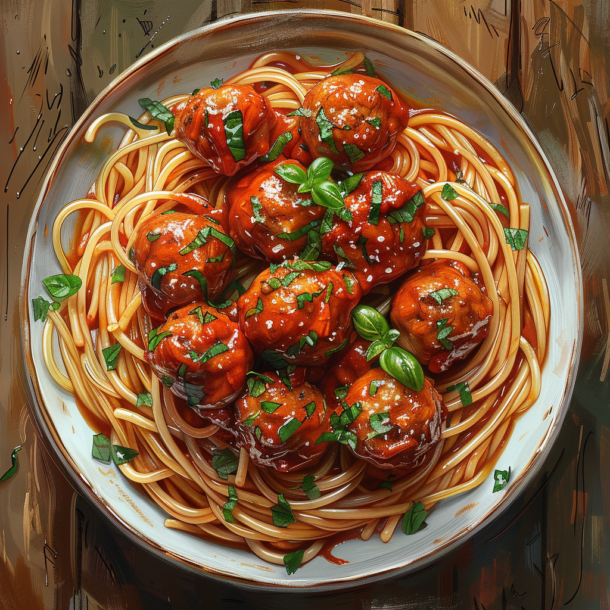

Spaghetti and Meatballs

Description
This is a recipe from Daniel Gritzer. The original recipe page can be seen HERE
Who doesn't like spaghetti and meatballs? I know, it's an American thing.
Ingredients
- 2 1/2 ounces (75g) fresh, crustless white bread, cut into 1/2-inch cubes (about 2 unpacked cups)
- 1/2 cup (120ml) whole milk
- 1 medium (8-ounce; 225g) yellow onion, minced
- 6 medium cloves garlic (about 1 ounce; 30g), finely minced
- 1 1/2 ounces (45g) Parmigiano-Reggiano, grated
- 3 ounces (85g) pancetta, finely minced
- 3 large egg yolks
- 1/3 cup loosely packed fresh parsley leaves and tender stems (3/4 ounce; 20g), minced
- 2 teaspoons Diamond Crystal kosher salt (8g); for table salt use half as much by volume or the same weight
- 1/2 teaspoon freshly ground black pepper
- 3/4 teaspoon dried oregano
- 3/4 teaspoon ground fennel seed
- 1 pound (450g) ground beef (at least 25% fat; see note)
- 1/2 pound (225g) ground pork (at least 25% fat; see note)
- 3 tablespoons (45ml) extra-virgin olive oil
- 2 quarts (2L) tomato sauce
- 1 pound (450g) spaghetti
- Kosher salt
- 2 ounces (55g) finely grated Parmigiano-Reggiano, plus more for sprinkling
Directions
- For the Meatballs and Sauce: In the bowl of a stand mixer, combine bread with milk, tossing to coat. Let stand, tossing occasionally, until bread is completely moist, about 10 minutes. Squeeze bread between your fingers or mash with a spoon to make sure there are no dry spots.
- Add onion, garlic, Parmigiano-Reggiano, pancetta, egg yolks, parsley, salt, pepper, oregano, and fennel to bread mixture.
- Set mixer bowl in stand mixer and fit with paddle attachment. Starting at low speed and gradually increasing to medium-high, beat bread mixture until thoroughly blended, stopping to scrape down sides as necessary. Add 1/3 each of the beef and pork and beat at medium-high speed until thoroughly blended with bread mixture.
- Remove bowl from stand mixer and add remaining beef and pork. Using a clean hand, gently mix meatball mixture, teasing apart ground meat with your fingers, just until ground beef and pork are thoroughly mixed in and no pockets of unincorporated meat remain; avoid mixing any more than is necessary for even distribution.
- Line a rimmed baking sheet with parchment paper. Using clean hands, roll meatball mixture into 32 golf ball-sized balls (1 ounce/30g each); there will be some meatball mixture left over.
- In a large enameled Dutch oven, heat olive oil over medium heat until shimmering. Working in 2 batches, add meatballs and cook, turning occasionally with a thin metal spatula, until browned on several sides, about 2 minutes per side. Transfer browned meatballs back to parchment-lined baking sheet and repeat with remaining meatballs.
- Add reserved meatball mixture to Dutch oven and cook, stirring and breaking up large chunks with a wooden spoon, until cooked through and beginning to brown, about 5 minutes.
- Add tomato sauce, stirring and scraping up any browned bits. Bring to a simmer over medium-high heat. Add seared meatballs back to Dutch oven, return sauce to a simmer, then lower heat to maintain a gentle simmer. Cook until meatballs are fully cooked through, about 10 minutes.
- To Finish 4 Servings of Spaghetti and Meatballs: [Note: The following instructions are for 4 servings; see serving tips above for other ways to portion and serve the pasta and sauce]: Spoon half the sauce and meatballs into a large skillet or sauté pan; set remaining sauce and meatballs aside to cool to room temperature, then refrigerate or freeze in an airtight container.
- In a pot of salted, boiling water, cook spaghetti, stirring frequently to prevent sticking, until just shy of al dente, about 2 minutes less than package recommends.
- Using tongs, transfer spaghetti directly into simmering sauce along with 1/4 cup (60ml) pasta cooking water, and stir to combine. Cook, stirring constantly, until pasta is al dente and sauce has thickened so it coats noodles and isn't watery, 2 to 3 minutes. Remove from heat.
- Add Parmigiano-Reggiano, stirring well to emulsify into sauce. If tomato sauce is too thick, adjust consistency as needed with additional pasta water.
- Divide spaghetti and meatballs between individual serving bowls, and serve, passing more grated cheese at the table.
Notes
It can be difficult to guarantee the fat percentage of pre-ground meat, but a higher-fat mix of about 25% is one of the keys to juicy and tender meatballs, so do your best to track down ground beef and pork from a meat counter or butcher that can get you the meat ground to your specifications. Similarly, the meat should be a fine or medium grind, not coarse, so make sure to confirm a proper grind when buying. Of course you can control all of this by grinding the meat yourself using cuts like beef chuck and pork shoulder, both of which will get you in the ballpark of the fat percentage you need; if you do grind the meat yourself, you can save time by running the pancetta through the grinder too (just make sure it's nice and cold before grinding).